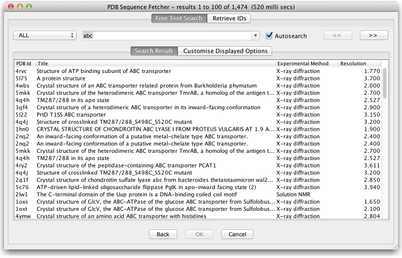

Jalview provides a specialised interface that allows fast and efficient discovery and retrieval of data from the PDB database, based on the EMBL-EBI's PDBe BioSOLR query interface. It allows interactive querying of PDB metadata with free text and structured queries, so structures can be located without prior knowledge of their database accessions, or via manual cross-referencing with other bioinformatics websites.
To open the PDB Sequence Fetcher, select PDB as the database from any Sequence Fetcher dialog (opened via "File →Fetch Sequences").
To search the PDB, begin typing in the text box. If the 'autosearch' checkbox is enabled, then the results of your query will be automatically updated and shown in the search results tab; otherwise, press return to update the results. To access previous searches, press the down-arrow or click the drop down menu icon at the side of the search box. If you just want to paste in a list of IDs, the 'Retrieve IDs' tab provides a batch-retrieval interface.
You can sort results according to the displayed columns, and select entries with the mouse and keyboard. Once you have selected one or more entries, hit the OK button to retrieve and view them in Jalview.
Customising The PDB Sequence Fetcher
To change the displayed meta-data in the search result, click the 'Configure Displayed Columns' tab, and select the fields you'd like displayed. These fields can also be configured via the Structure tab of the Jalview Desktop Preferences.
The PDB Sequence Fetcher interface was introduced in Jalview 2.9